Pilot A · changes since the approved sheet
Approved: sheet 7e5deff7… @ 48d49bb, plates page 43a264e5… ("Pilot a ok", 2026-10-19).
This head: dcac4a3. Plates page sha256 43a264e5a4a9f5d9bb1069684c65a7dda51ceaddc4023daed6114d24156f26c6: unchanged, so no plate picture moved.
Hand close-ups
goblet squat · Cupped hold
Critic: R8 round 2 @ 6b6e5ab: C5 [2,4,3], reads as a clamp. Round 1 @ 2aa3732: C5 [2,1,1], C6 [3,3,3].
Before
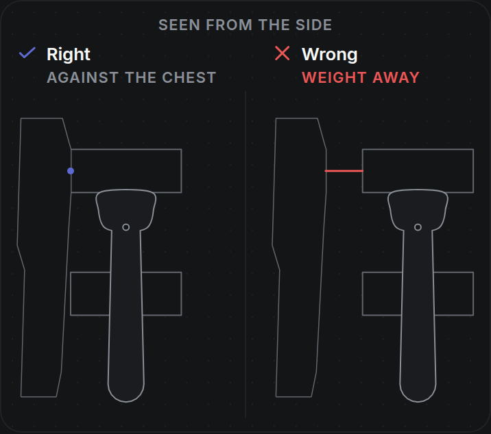
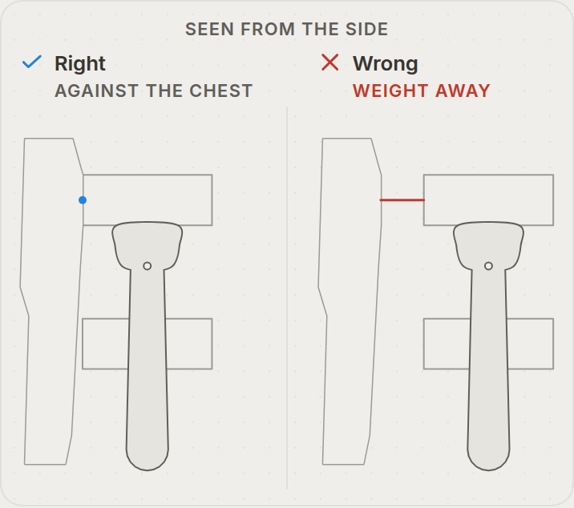
After
No close-up. The hand view moved to GAPS (D-LIB12FIX-R8-GAPS, #191 6274835211); redraw is follow-up F-LIB12-R8B.
front squat · Front rack
Critic: R8 round 2 @ 6b6e5ab: C1 [2,3,3], C2, C3 [2,3,2], C5 and C7 below the bar; the shoulder is hidden, so the bar reads as held in the hand. Round 1: C1 [3,2,3], C4 [3,4,3], C5 [2,2,2], C7 [3,3,3].
Before
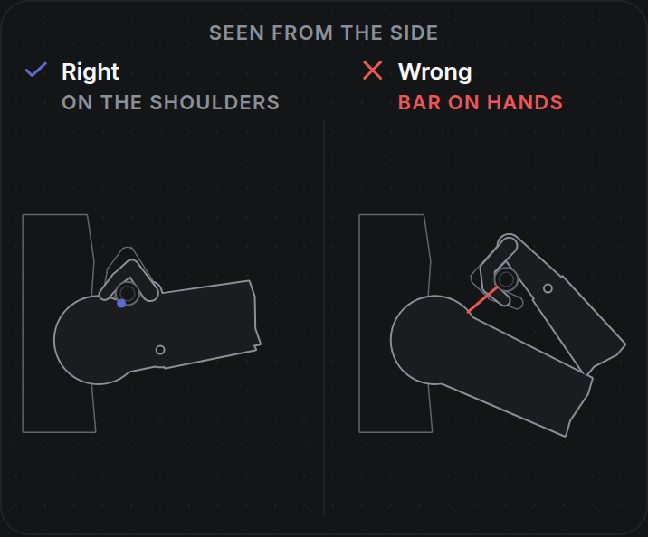
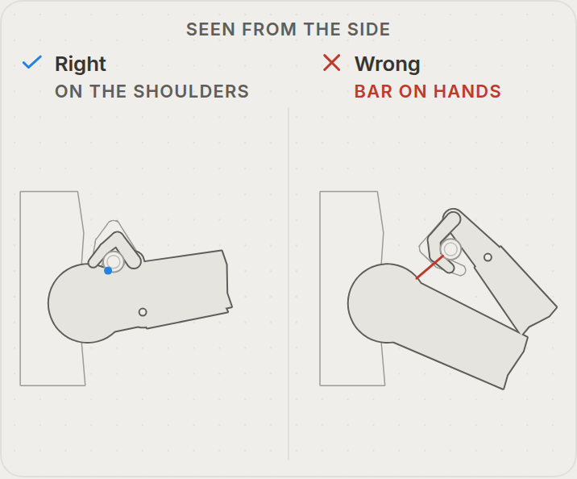
After
No close-up. The hand view moved to GAPS (D-LIB12FIX-R8-GAPS); redraw is follow-up F-LIB12-R8B.
mountain climbers · Palm flat (new)
Critic: R8 round 2 @ 6b6e5ab: PASS on both pages (every median ≥ 4). Round 1 @ 2aa3732: C5 [3,3,3]; Palm cupped page C3 [3,3,4].
Before
Not on the approved sheet.
After
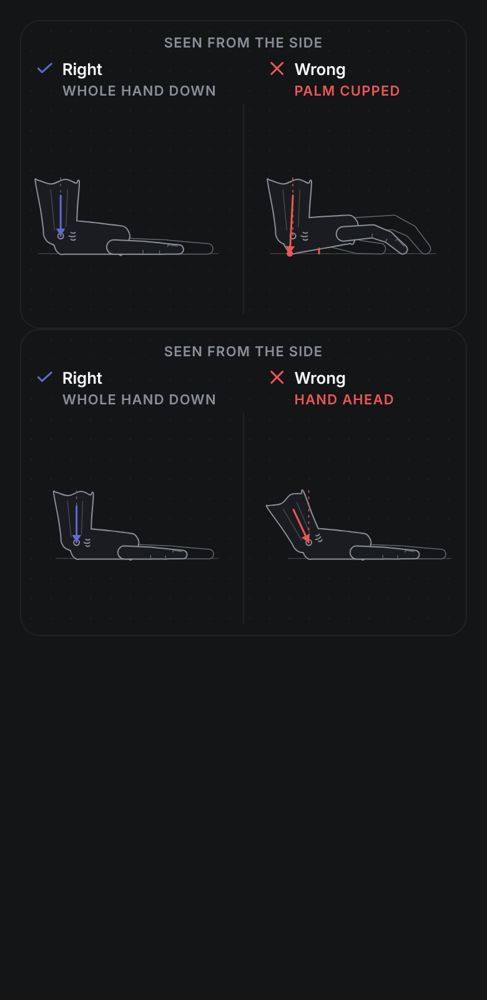
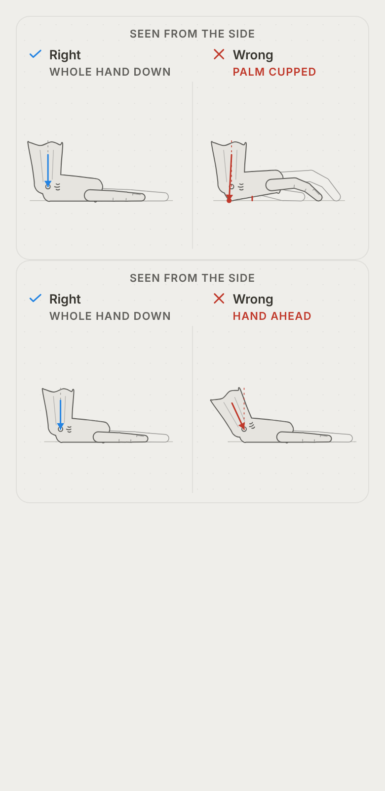
dumbbell biceps curl · Curl (LIB-7, new)
Critic: LIB-7 pair (renderPair, main 5158609 #193); critic scores from the supervisor.
Before
Not on the approved sheet: #193 was not on main then.
After
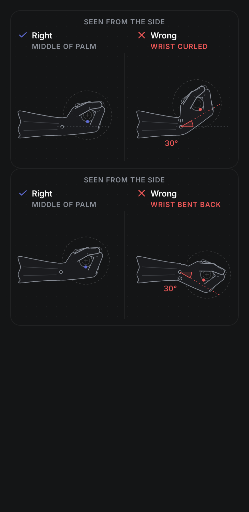
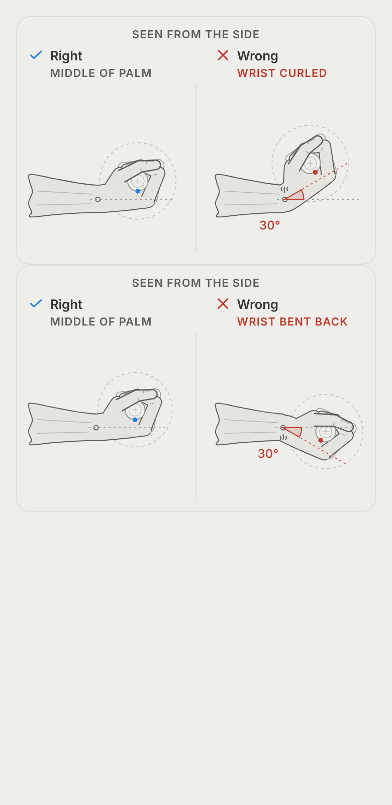
rope triceps pushdown · Rope (LIB-7, new)
Critic: LIB-7 pair (renderPair, main 5158609 #193); critic scores from the supervisor.
Before
Not on the approved sheet: #193 was not on main then.
After
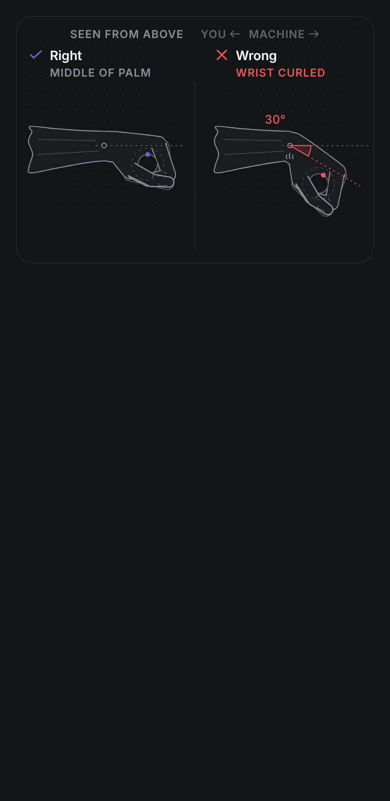
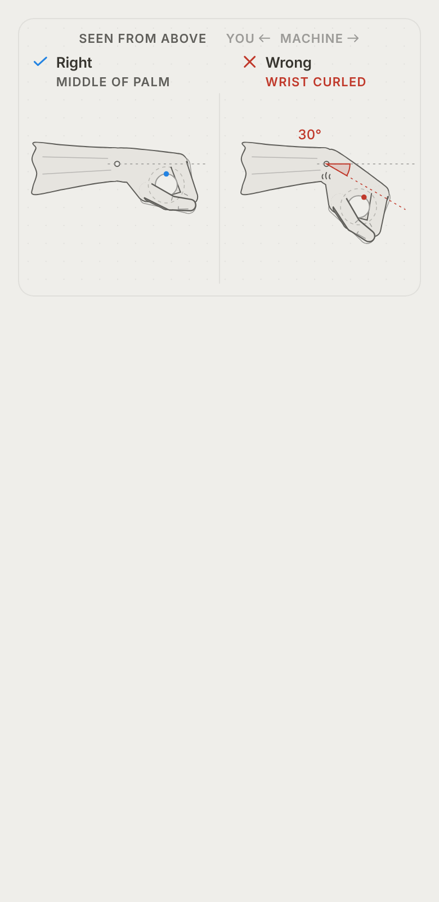
ez bar curl · EZ bar (LIB-7, new)
Critic: LIB-7 pair (renderPair, main 5158609 #193); critic scores from the supervisor.
Before
Not on the approved sheet: #193 was not on main then.
After
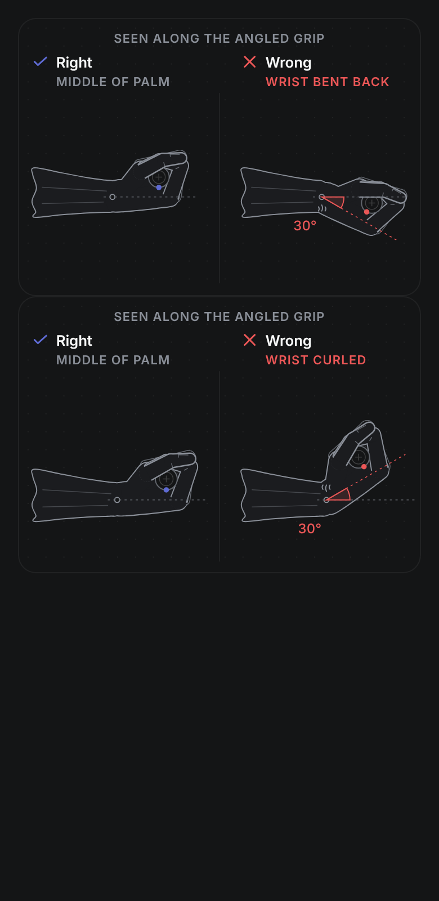
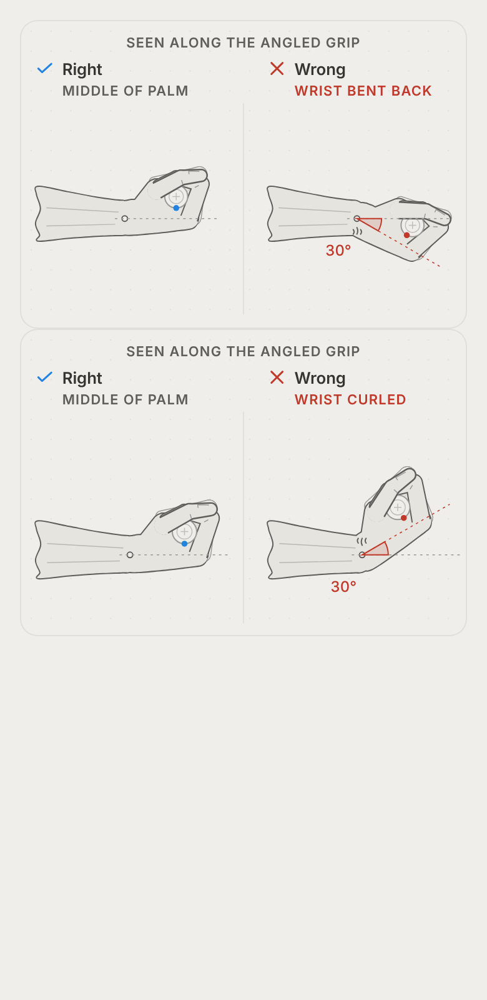
Plank wording
Research findings, not yet on the card. Your answer decides each line.
| Item | Line | Now | Proposed | Your answer |
|---|---|---|---|---|
| plank-R1 high | plate.mistake.what (top fault) | Low back sags: hips drop below the shoulder-heel line. | Hips hiked up. (claims c4, c13) The pick by source count: hiked hips 2 (ACE, Harvard), sag 1. Drawn Mistake today: the sag. why becomes "ACE and Harvard both tell the lifter to avoid it (c4, c13)". handlingMistakes[0] becomes "Hips hiked up." / "Don't bend at your hips." (c4, c13); the sag moves to [1] with plank-R2's fix, the shrug to [2]. | Keep now · Use proposed |
| plank-R2 medium | handlingMistakes[0].fix (sag) | Brace harder; if you can't hold it, end the hold. | Brace your trunk. Can't hold it? Rest on your knees. (claims c4, c2, c14) c14 is a new Harvard claim: "If you can't hold the position, modify the exercise by resting your weight on your knees instead of your feet". | Keep now · Use proposed |
| plank-R3 low | handlingMistakes[2] | Holding the breath. / Keep breathing through the hold. | Removed (no source names it as a mistake). setup keeps "keep breathing" (c6). | Keep now · Use proposed |
| plank-R4 low | plate.mistake.what (only if R1 is not chosen) | Low back sags: hips drop below the shoulder-heel line. | Low back sags. (c4) | Keep now · Use proposed |
| plank-R5 low | zooms | hip-line right "Hips in line with shoulders and heels." · wrong "Low back sagging, hips dropped." · shoulder-stack wrong "Shoulders shrugged or ahead of the elbows." | hip-line right "No sagging low back, no hiked hips." · wrong "Low back sagging." (c4) · shoulder-stack wrong "Shoulders shrugged, not over the elbows." (c5) | Keep now · Use proposed |
| plank-R6 low | posture[3] | Harder version: tuck the pelvis and draw the shoulder blades together. | Harder version: tilt the pelvis backward and draw the shoulder blades together. (c11) | Keep now · Use proposed |
| plank-R7 low | feel.rows[1].means (low-back pain) | Not a training feeling. | (empty); fix stays "Stop the exercise." (c8) | Keep now · Use proposed |
Mountain climbers wording
| Item | Line | Now | Proposed | Your answer |
|---|---|---|---|---|
| mountain_climbers-R1 medium | feel.rows[2] (wrist pain) | means "Not a normal training feeling." · fix "Stop the exercise." · claim c12 · fixNote "The shared wrist box covers what to do next. Hands on a bench or step (c9) only means less load on the arms and core; no source says it relieves the wrist, so it is not offered as a wrist fix." | means "" · fix "Stop the exercise." · claims c12, c22 · redFlag wrist kept · fixNote drops "no source says it relieves the wrist" (c21 now says the bench puts less weight on the wrists). Your call too: whether this row also offers c21's option (hands on a bench, or dumbbells to keep the wrists neutral). | Keep now · Use proposed |
| mountain_climbers-R2 medium | handlingMistakes[0].fix | Keep the plank line; slow down or step instead of hopping. | Keep your hips level; slow down. (claims c16, c18) | Keep now · Use proposed |
| mountain_climbers-R3 low | risks[1] | Bouncing adds impact and costs control. | Bouncing on your toes can add impact and make control harder. (c7) | Keep now · Use proposed |
| mountain_climbers-R4 low | plate.checkpoints[0].claim | c2 | ["c2","c6"] | Keep now · Use proposed |
| mountain_climbers-R5 low | plate.tells[1].claim | c4 | ["c4","c16"] | Keep now · Use proposed |
| mountain_climbers-R6 low | zooms[0] (hand) | right "Palm flat, hand directly under the shoulder." · claim c6 | claim ["c2","c6","c19"]; "Palm flat" gets a quote or a drawing-convention note (LR-4). | Keep now · Use proposed |
| mountain_climbers-R7 low | zooms[1].claim | c4 | ["c4","c3","c16"] | Keep now · Use proposed |
| mountain_climbers-R8 low | feel.rows[0].means | The plank is working. | You might feel these muscles working. (c11) | Keep now · Use proposed |
| mountain_climbers-R9 low | unsourced, grip.note (not shown in the app) | unsourced has "Breathing." and "Whether fists or push-up handles help a sore wrist." · grip.note "No source found on finger spread, weight through the heel of the hand, or whether fists or push-up handles help a sore wrist." | Both lines leave unsourced (now c17, c21); grip.note drops the fists-or-handles clause. | Keep now · Use proposed |